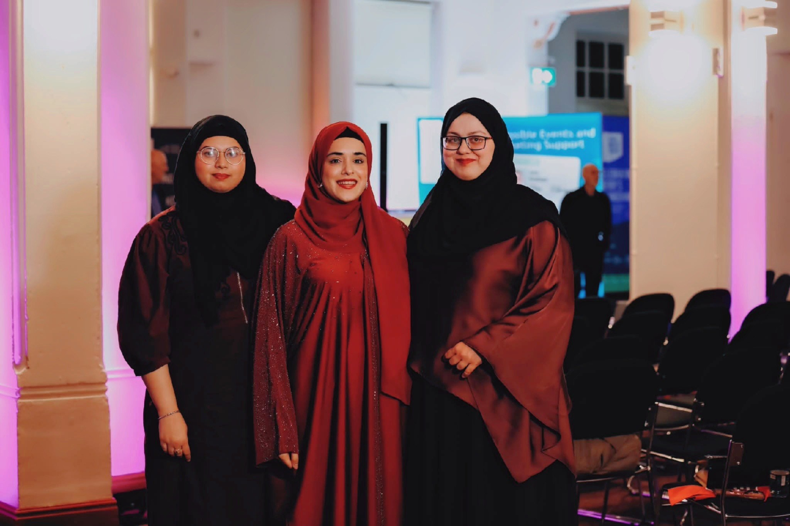

OUR NEWS · NOVEMBER 2026
Spark & Spectrum CIC celebrates Derby Impact Awards recognition
Just months after its official launch, Derby-based Spark & Spectrum CIC is celebrating being shortlisted at the Derby Impact Awards.

For our three-person leadership team, this recognition is an encouraging milestone in a journey that is still just beginning. Spark & Spectrum was founded by Sofia Iqbal and Selina Afzal, with Aishah Mahmood joining the leadership team, to help families feel heard and supported when navigating special educational needs and disabilities (SEND), medical needs and emotional wellbeing.
A small beginning, a growing community
Although Spark & Spectrum officially launched in September 2026, our community work began earlier. Since June, we have supported more than 250 families through guidance, workshops and community engagement. Our WhatsApp community has grown to more than 130 members.
Our activities include:
- Chaii & Chat, bringing people together for conversation and connection.
- EmpowerED Minds Circle, creating space for emotional wellbeing and personal development.
- SEND Paperwork Without Panic, supporting families with complex forms and processes.
- Walk, Talk & Connect, encouraging connection and wellbeing.
- Pause & Create, making space for creativity and community.
Alongside these sessions, we help families navigate school-related concerns, advocacy and access to appropriate support. Our approach is culturally aware and trauma-informed, recognising the barriers that can prevent people from asking for help.
Why this recognition matters
Building a community organisation takes much more than running sessions. Behind the scenes are conversations with families, programme preparation, partnership-building, fundraising and the everyday responsibilities of running a CIC.
As a newly established organisation, much of this work has been carried out voluntarily, with limited financial resources. Being shortlisted is an acknowledgement of the community need behind the work and the commitment of everyone helping us respond to it.
Impact isn't always measured by how long an organisation has existed. Sometimes it begins with recognising a need and choosing to do something about it.
Recognising the people behind the work
Our three directors bring complementary strengths across SEND guidance, emotional wellbeing, community programmes and organisational development. This recognition is shared by the whole team and by the families whose experiences continue to shape our work.
It also belongs to the volunteers, businesses, partners and supporters who have offered their time, resources and encouragement since our earliest days.
Celebrating our fellow organisations
We congratulate Derbyshire Community Bank on winning Social Venture of the Year and recognise the many other organisations making a positive contribution across Derby and Derbyshire. Being part of a community of people working for positive change is something we value deeply.
Looking ahead
We are focused on strengthening local partnerships, developing our programmes and securing the funding needed to keep support accessible and sustainable. Our ambitions include more emotional wellbeing provision, SEND advocacy, school and community workshops, and opportunities for families who may otherwise struggle to access services.
Our ambition isn't simply to grow bigger. It's to build something accessible, accountable and genuinely responsive to the people it was created to support.
Thank you for being part of our journey
To every family who has attended a session, shared an experience or placed their trust in us, thank you. To the organisations, volunteers and local businesses who have supported us, thank you.
We are at the beginning of our journey, but the community growing around us is already showing us why this work matters.
This recognition belongs to the community we are building together.
← Back to our homepage